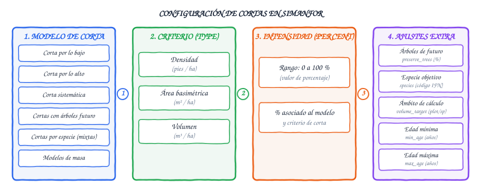
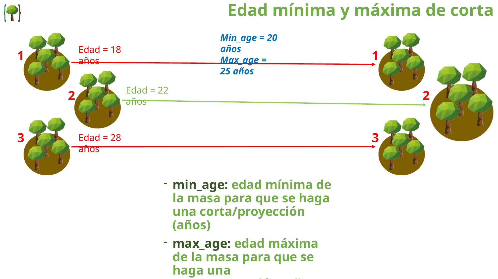
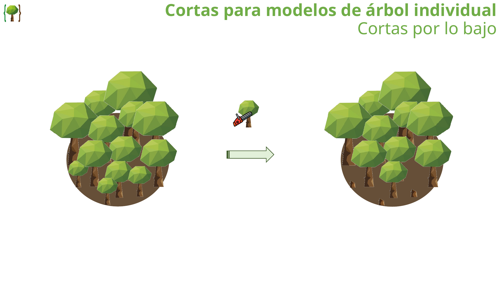
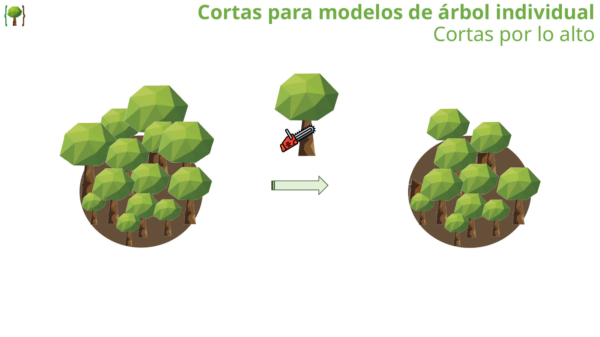
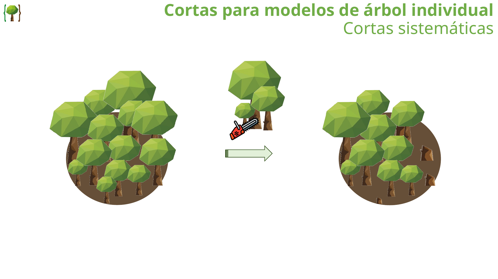
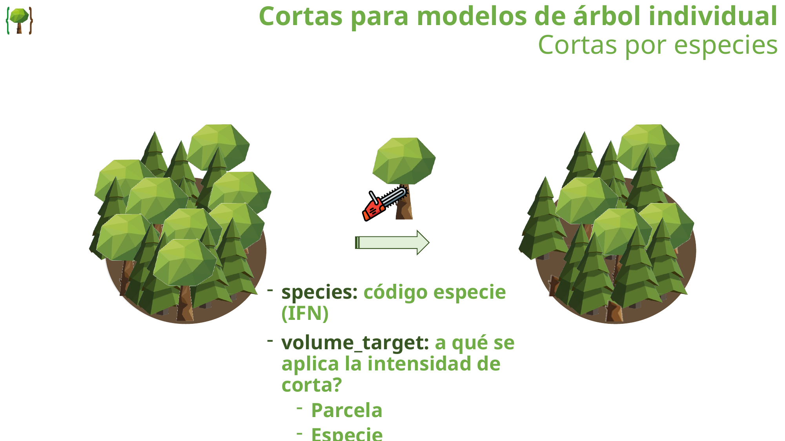
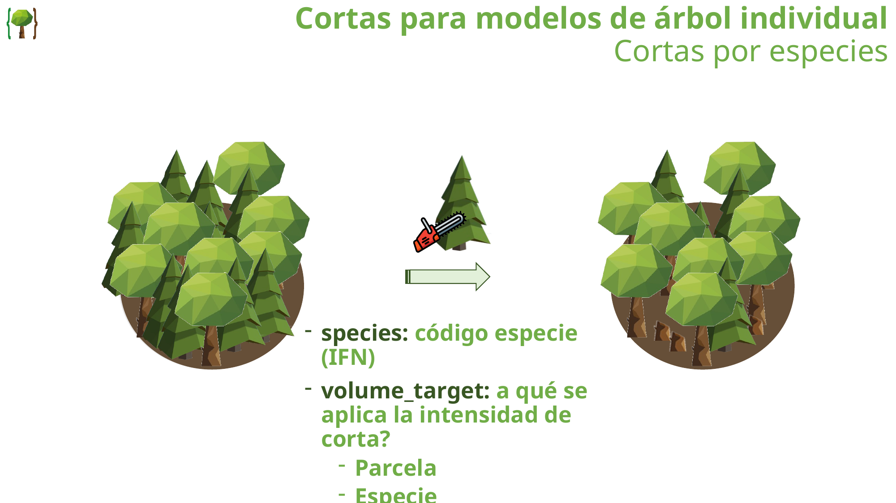
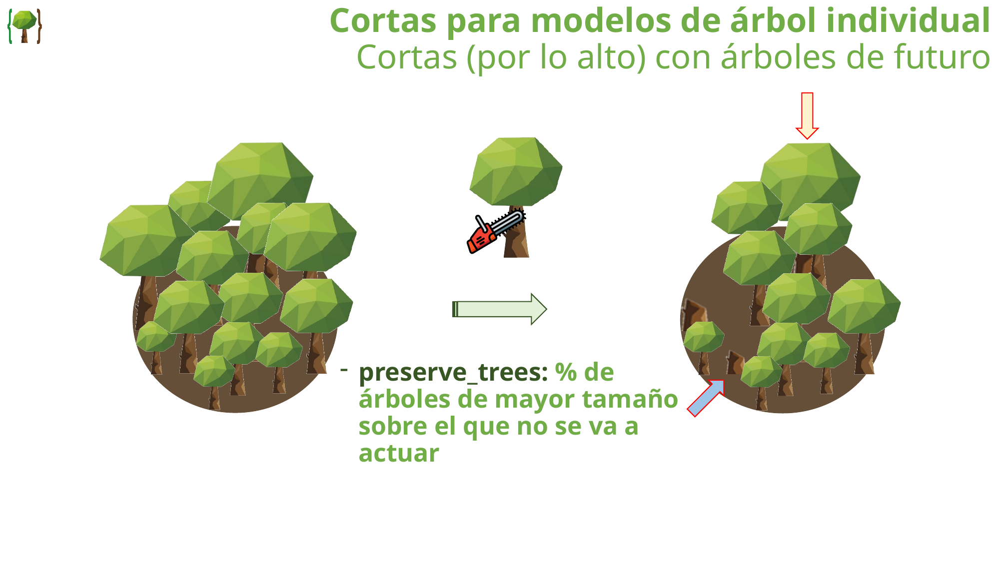
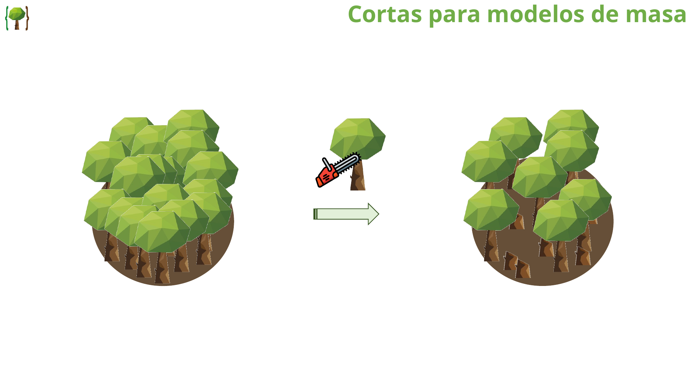

Modelos de corta y tratamientos selvícolas
SIMANFOR incluye un conjunto de modelos de corta e intervención selvícola aplicables tanto a masas proyectadas mediante modelos de árbol individual como a modelos a nivel de masa (rodal).
Las intervenciones se programan mediante los Escenarios del simulador y permiten evaluar el impacto de diferentes intensidades y tipologías de intervenciones selvícolas sobre cada árbol, la masa, y todas las variables calculadas para cada uno de ellos.
Modelos, criterios e intensidades de corta
Toda intervención de corta en SIMANFOR se define seleccionando un modelo de corta (aplicar corta), asociado a un criterio de corta (type) y una intensidad de corta (percent):


-
Modelos de corta disponibles (
aplicar corta):- Para modelos de árbol individual:
- Cortas por lo bajo
- Cortas por lo alto
- Cortas sistemáticas
- Cortas semisistemáticas (como combinación de las anteriores, ver detalle en Cortas semisistemáticas)
- Cortas (por lo bajo, por lo alto o sistemáticas) por especies (masas mixtas)
- Cortas (sistemáticas o por lo alto) con árboles de futuro
- Cortas (sistemáticas o por lo alto) con árboles de futuro por especies (masas mixtas)
- Para modelos de masa:
- Cortas para modelos de masa
- Para modelos de árbol individual:
-
Criterios de corta disponibles (
type):- Densidad: Número de pies por hectárea (pies/ha).
- Área basimétrica: Superficie ocupada por la sección normal de los troncos (m²/ha).
- Volumen: Volumen con corteza (m³/ha).
-
Intensidad de corta (
percent): Porcentaje del criterio seleccionado a extraer durante la intervención (valor de 0 a 100 %).
Rango de edad de aplicación
Los escenarios permiten definir un rango de edades (min_age y max_age) para aplicar cada corta. Esto resulta especialmente útil cuando se simula un inventario con parcelas que tienen diferentes edades iniciales utilizando un mismo escenario:
min_age: Edad mínima de la masa para que la intervención sea ejecutada (años).max_age: Edad máxima de la masa por encima de la cual no se aplicará la corta (años).
Comportamiento fuera del rango de edad
Si la edad de una parcela no se encuentra dentro del intervalo definido por min_age y max_age, el simulador omitirá la corta para esa parcela y continuará con el siguiente paso de la simulación.

Cortas para modelos de árbol individual
Los modelos de corta de árbol individual operan seleccionando y extrayendo pies específicos de la lista de árboles según su tamaño (basándose en el diámetro normal dbh) y su especie.
Cortas por lo bajo
La corta se realiza comenzando por los árboles de menor diámetro normal (dbh) de la parcela y avanzando progresivamente hacia los diámetros mayores hasta alcanzar el porcentaje fijado por el criterio de corta.

Cortas por lo alto
La corta comienza por los árboles de mayor diámetro normal (dbh) de la parcela y desciende hacia los diámetros inferiores hasta alcanzar la intensidad programada.

Cortas sistemáticas
La extracción se reparte de forma homogénea entre todas las clases diamétricas, reduciendo en una misma proporción el factor de expansión (expan) de cada árbol en la parcela.

Cortas semisistemáticas
Aunque no están programadas como un modelo de corta único en SIMANFOR, es posible simularlas combinando cortas sistemáticas y cortas por lo bajo/alto dentro del mismo escenario. Por ejemplo, una corta semisistemática con intensidad total del 20 % puede simularse mediante una corta sistemática del 10 % (representando, por ejemplo, una apertura de calles o pistas) seguida inmediatamente de una corta por lo bajo del 10 % (representando una selección por lo bajo entre el arbolado restante).
Cortas (por lo bajo, por lo alto o sistemáticas) por especies (masas mixtas)

Permite discriminar la intervención sobre una especie concreta en masas mixtas mediante los siguientes parámetros:
species: Código numérico de la especie objetivo (ver la documentación del modelo de proyección a utilizar).volume_target: Ámbito de referencia al que se aplica el porcentaje de intensidad de corta:- Parcela: La intensidad se calcula sobre el total acumulado de la parcela (extrayendo únicamente pies de la especie indicada).
- Especie: La intensidad se calcula exclusivamente sobre las existencias de la especie objetivo dentro de la parcela.


Cortas (sistemáticas o por lo alto) con árboles de futuro

- Parámetro adicional:
preserve_trees(% de árboles de mayor tamaño sobre el que no se va a actuar, tomando un 15 % por defecto). - Funcionamiento: Se reserva y protege un porcentaje superior de los árboles dominantes o de mayor tamaño (
preserve_trees). La corta sistemática o por lo alto se aplica inmediatamente a continuación sobre los siguientes árboles más gruesos de la masa.

Cortas (sistemáticas o por lo alto) con árboles de futuro por especies (masas mixtas)

Combinan el funcionamiento de todos los tipos de corta anteriores, permitiendo seleccionar la especie objetivo (species), el ámbito del cálculo (volume_target) y el porcentaje de árboles de futuro a preservar (preserve_trees).
Cortas para modelos de masa

En las simulaciones con modelos agregados de rodal, no se dispone de una lista individual de árboles, por lo que las cortas son sistemáticas (a excepción de modelos como SILVES, que cuentan con modelos específicos para simular cortas por lo bajo y por lo alto). En ellos, la configuración es la siguiente:
- Modelo de corta:
[masa] Corta sistemática - Criterio de corta (
type):densidad,area_basimetricaovolumen - Intensidad de corta (
percent): Porcentaje a extraer (0 a 100 %)

Resumen de parámetros en escenarios
| Parámetro | Tipo | Descripción | Valores posibles |
|---|---|---|---|
type |
Texto / Entero | Criterio de corta | Densidad, Área basimétrica, Volumen |
percent |
Entero | Intensidad de la corta | 0 - 100 (%) |
preserve_trees |
Entero | Porcentaje de árboles de mayor tamaño protegidos | 0 - 100 (%) |
species |
Entero | Código IFN de la especie objetivo | Código IFN (ej. 21, 24, 41) |
volume_target |
Texto | Ámbito de cálculo del porcentaje | Parcela o Especie |
min_age |
Entero | Edad mínima para ejecutar la corta | Años (ej. 38) |
max_age |
Entero | Edad máxima para ejecutar la corta | Años (ej. 42) |